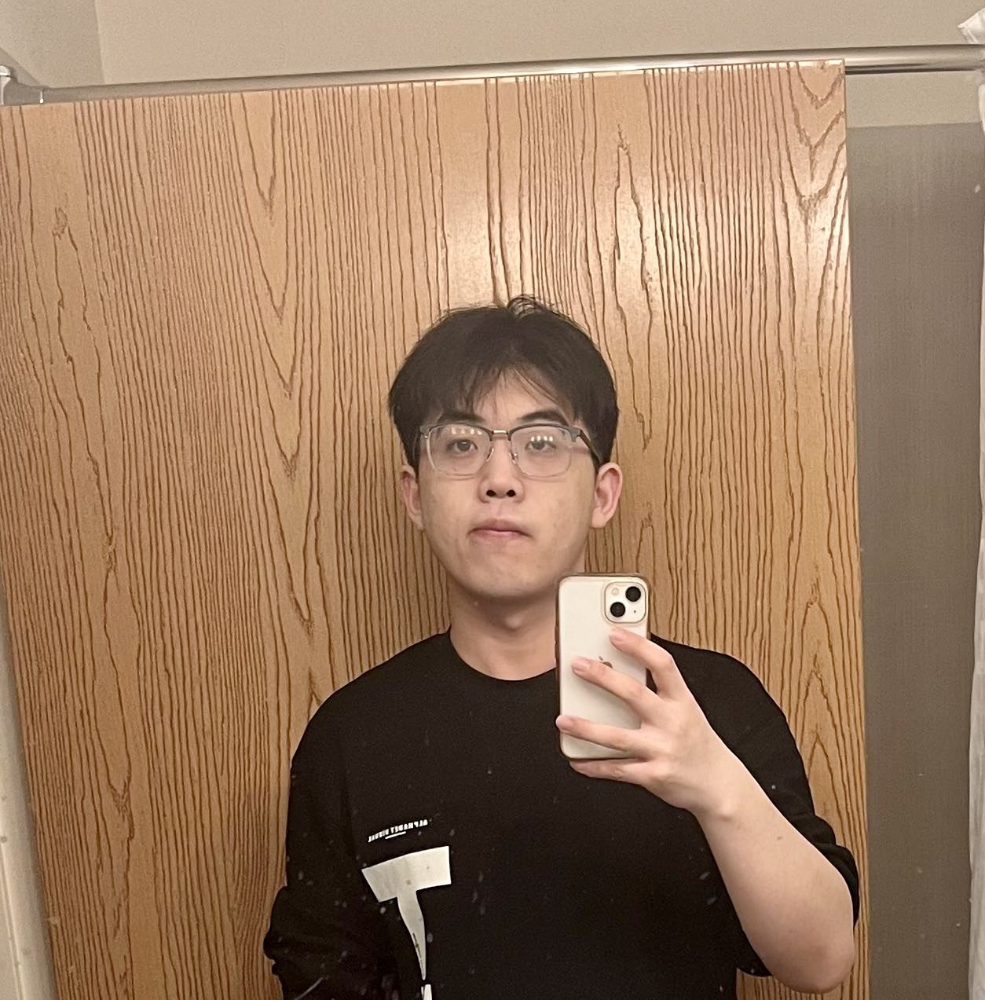

|
I am a third-year Ph.D. student advised by Prof. Jingrui He at the University of Illinois Urbana-Champaign. Prior to joining UIUC in 2021, I earned my B.S. degree in Computer Science from University of Science and Technology of China, School of the Gifted Young. My research primarily centers on enhancing the trustworthiness and efficiency of machine learning algorithms across various modalities and disciplines, with the ultimate goal of making ML models more accessible and inclusive. My research interests covers a wide range of topics:
Feel free to drop me an e-mail, if you are interested in my research and want to discuss relevant research topic or potential collaborations! |
 |
|


|

|
|
Conference |
- Towards Universal Multi-Modal Personalization: A Language Model Empowered Generative Paradigm
Tianxin Wei, Bowen Jin, Ruirui Li, Hansi Zeng, Zhengyang Wang, Jianhui Sun, Qingyu Yin, Hanqing Lu, Suhang Wang, Jingrui He, Xianfeng Tang
In the ICLR 2024 (Full Research, AR: 31%). [Code]


- Scalable and Effective Generative Information Retrieval
Hansi Zeng, Chen Luo, Bowen Jin, Sheikh Muhammad Sarwar, Tianxin Wei, Hamed Zamani
In the WWW 2024 (Full Research, AR: 20.2%). [Code]

- TAU: Trajectory Data Augmentation with Uncertainty for Next POI Recommendation
Zhuang Zhuang, Tianxin Wei, Lingbo Liu, Heng Qi, Yanming Shen, Baocai Yin
In the AAAI 2024 (Full Research, AR: 24%). [Code]


- Meta-Learning with Neural Bandit Scheduler
Yunzhe Qi, Yikun Ban, Tianxin Wei, Jiaru Zou, Huaxiu Yao, Jingrui He
In the NeurIPS 2023 (Full Research, AR: 26.1%). [Code]

- Adaptive Test-Time Personalization for Federated Learning
Wenxuan Bao*, Tianxin Wei*, Haohan Wang, Jingrui He
In the NeurIPS 2023 (Full Research, AR: 26.1%). [Code]
- Robust Basket Recommendation via Noise-tolerated Graph Contrastive Learning
Xinrui He*, Tianxin Wei*, Jingrui He
In the CIKM 2023 (Full Research, AR: 24.0%). [Code]
- NTK-approximating MLP Fusion for Efficient Language Model Fine-tuning
Tianxin Wei*, Zeming Guo*, Yifan Chen*, Jingrui He
In the ICML 2023 (Full Research, AR: 27.9%). [Code]

- Augmentations in Hypergraph Contrastive Learning: Fabricated and Generative
Tianxin Wei*, Yuning You*, Tianlong Chen, Yang Shen, Jingrui He, Zhangyang Wang
In the NeurIPS 2022 (Full Research, AR: 25.6%). [Code][Appendix]
- Comprehensive Fair Meta-learned Recommender System
Tianxin Wei, Jingrui He
In the KDD 2022 (Full Research, AR: 15.0%). [Code]

- Model-Agnostic Counterfactual Reasoning for Eliminating Popularity Bias in Recommender System
Tianxin Wei, Fuli Feng, Jiawei Chen, Ziwei Wu, Jinfeng Yi, Xiangnan He
In the KDD 2021 (Full Research, AR: 15.4%). [Code]

- Causal Intervention for Leveraging Popularity Bias in Recommendation
Yang Zhang, Fuli Feng, Xiangnan He, Tianxin Wei, Chonggang Song, Guohui Ling and Yongdong Zhang
In the SIGIR 2021 (Best Paper Honorable Mention, 1 out of All, Full Research, AR: 21%). [Code]
- Fast Adaptation for Cold-start Collaborative Filtering with Meta-learning
Tianxin Wei, Ziwei Wu, Ruirui Li, Ziniu Hu, Fuli Feng, Xiangnan He, Yizhou Sun, and Wei Wang
In the ICDM 2020 (Full Research, AR: 9.8%). [Code]
- Unpaired Multimodal Neural Machine Translation via Reinforcement Learning
Yijun Wang*, Tianxin Wei*, Qi Liu, Enhong Chen
In the DASFAA 2021 (Full Research, AR: 20%).
- AR-Stock: Deep Augmented Relational Stock Prediction
Tianxin Wei, Yuning You, Tianlong Chen
In the AAAI 2021 Workshop on Knowledge Discovery from Unstructured Data (Oral). [Code]
-
Graph Contrastive Learning: An Odyssey towards Generalizable, Scalable and Principled Representation Learning on Graphs
Yan Han, Yuning You, Wenqing Zheng, Scott Hoang, Tianxin Wei, Majdi Hassan, Tianlong Chen, Ying Ding, Yang Shen, Zhangyang Wang
In the IEEE Data Engineering Bulletin.

-
Parameter Compression for Large-scale Mixture-of-expert LLM
preprint 2024. [Code]
-
Connecting Domains and Contrasting Samples: A Ladder for Domain Generalization
Tianxin Wei*, Yifan Chen*, Xinrui He, Wenxuan Bao, Jingrui He
preprint 2023. [Code]
-
Language Models as Semantic Indexers
Bowen Jin, Hansi Zeng, Guoyin Wang, Xiusi Chen, Tianxin Wei, Ruirui Li, Zhengyang Wang, Zheng Li, Yang Li, Hanqing Lu, Suhang Wang, Jiawei Han, Xianfeng Tang
preprint 2023. [Code]
-
Neural Collaborative Filtering Bandits via Meta Learning
Yikun Ban, Yunzhe Qi, Tianxin Wei, Lihui Liu, Jingrui He
preprint 2022. [Code]
|
SIGIR 2021 Best Paper Honorable Mention NeurIPS 2023 Scholar Award NeurIPS 2022 Scholar Award ICML 2023 Grant Award Program Committee/Reviewer: CIKM (2021-2023), ICML (2022-2024), NeurIPS (2022-2023), ICLR (2023-2024), KDD (2023-2024), AAAI (2023-2024), WSDM 2023, ACL 2023, EMNLP 2023, LOG 2022 Journal Reviewer: TOIS, TKDE, DMKD, Machine Learning, TMLR |
|
|


|